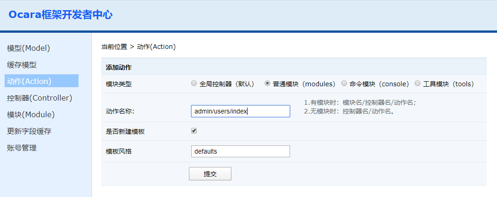

添加动作（Action） 1、进入开发者中心，点击左边的"动作（Action）"菜单。右边会出现新建动作的界面。  2、填写动作路径和名称、模板等信息后提交 添加选项介绍 模块类型： 参考添加控制器 动作名： （1）全局控制器（默认）填写：控制器名/动作名。如：home/index （2）其他三种模块填写：模块名/控制器名/动作名，中间用顺斜杠"/"分隔。如：admin/users/index 是否新建模板 参考添加控制器 模板类型 参考添加控制器